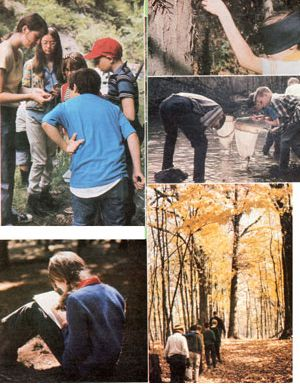

Here's how you can "get your foot in the door" of a fulfilling new outdoor career . . . even if you have little (or no!) previous experience.
As I eased myself onto yet another limb, I realized I was higher up in a tree than I'd ever been before . . . a good 35 feet, at least. However, there was little time to worry about the "altitude". Art Gingert-the Audubon warden who was watching my progress from the ground-yelled, "How many eggs are in the box?" So I swung over (safe, or so Art claimed, in my rope harness) closer to the trunk of the tree, unhooked the latch on the sparrow-hawk nesting box that heal been placed there the previous fall, lifted the wooden lid, and looked inside. To my great delight, I found a clutch of small speckled eggs nestled in a bed of dried grass.
"Three!" I shouted back. A big grin broke across my boss's sunburned face. "This project looks more promising all the time!" he exclaimed. "OK, close the box and come on down."
I wasn't exactly eager to let go of the sturdy branch I'd been clinging to, butspurred on by Art's encouragement-I eventually pushed off and dangled momentarily in space before gathering sufficient nerve to start rappelling down the tree trunk. When my feet touched the ground at last, I let out a spontaneous whoop of excitement. I was thrilled with my most recent accomplishment, and buoyantly happy to be a part of the National Audubon Society's Naturalist Training Program.
In fact, during my three-month internship, I frequently counted my blessings for having landed the position that sent me to a beautiful 680-acre wildlife sanctuary in northwestern Connecticut. Many times, as I went about my outdoor duties, I could scarcely believe that just a few months earlier I'd been sitting at a desk in a social services agency in upstate New York . . . bored with the office routine and wondering how I-with a degree only in sociology and absolutely no experience in biology or wildlife studies-could ever pursue my dream of becoming a naturalist. It was by luck alone that I had stumbled upon some information about the Audubon training program . . . and that stroke of good fortune radically changed my life!
Since completing my own successful internship two years ago, I've met lots of other people who-like me-were eager to enter conservation-related professions but didn't quite know how to go about doing so. From talking to such folks, and then relaying their questions to my new contacts in the environmental education field, I've learned that there are many outdoor training "schools" all over the country. The National Audubon Society is probably the best-known sponsor of such sessions . . . but similar projects are also run by college research stations, bird observatories, nature centers, marine aquariums, and state conservation offices. (You should know, however, that although virtually all of the programs do admit men and women who aren't attending college, I've found that the greatest proportion of internships go to undergraduate and graduate students.)
JOB BENEFITS
What can a person expect to gain from an environmental training program?
First and foremost, such jobs offer a chance to study under seasoned professionals and obtain some valuable firsthand experience . . . and to perform a worthwhile service for the planet. A lot of former interns have told me that they learned skills they could never have mastered in a traditional classroom setting.
Andrew Toombs, who studied forestry at Pennsylvania State University, wasfor instance-thoroughly familiar with the basics of textbook ecology . . . but he needed solid field experience in his hoped-for occupation of teaching young children about nature. During a threemonth internship at the Sharon Audubon Center (where I also worked), Andy had the opportunity to lead groups of elementary school students on nature discovery walks, and-under the guidance of the center's director and visiting naturalists-he developed enough confidence and experience to accept a full-time position, guiding similar groups, at a nature center near his home.
Besides acquiring experience that relates strictly to environmental occupations, an intern can pick up lots of just plain valuable outdoor skills. Field training usually includes instruction in working with tractors, chain saws, spotting scopes, microscopes, or water and soil sampling kits . . . and sometimes lessons in such "arts" as taxidermy. Through specialized programs, a trainee can also learn wildlife management, ecological research, and environmental journalism . . . or even design his or her own indepth research project.
The focus of most general internships, however, will be determined by the location or special goals of the sponsoring center itself. At the Manomet Bird Observatory in Massachusetts, for example, interns are involved with banding the thousands of birds that are netted each season by the observatory's fulltime employees. After a few months of such work, a Manomet trainee will become quite proficient at identifying different species and tagging them before release.
On the other hand, a student worker at the Chesapeake Bay Center for Environmental Studies may spend much of his or her time on a boat, collecting fish specimens and analyzing water quality. Other ongoing projects at the center-which is located outside Annapolis, Maryland-include the study of a nearby deer population and the development of written materials to publicize the organization's activities.
Beyond the technical skills and handson experience that an intern can acquire by working at an environmental study center, there's the added aesthetic benefit of living and laboring in isolated-and usually very beautifullocations. For instance, college student Bonnie Burkhart spent one summer in Hawaii's Volcanoes National Park, an exotic wilderness area with spectacular ocean views. As a trainee for the Student Conservation Association, Bonnie received free transportation, free housing on park grounds, and a $30-a-month food allowance. During her three-month stay, the young woman assisted a Ph.D. candidate in his field studies of the endangered nene goose.
APPLY EARLY
If you think you might be interested in an enriching outdoor work/study experience-one that just could lead you to a rewarding new career-consult the chart on the following page to find out whether any of the programs outlined there appeal to you. Although the list is not meant to be exhaustive, it does include many of the best apprenticeship opportunities that are available now. The internships listed range anywhere from a few months to a year . . . but the three-month summer stints are the most popular (and, therefore, often the most difficult to obtain).
Most sponsors like to have your application on file several months before the beginning of the season during which you want to work, so you'll have to think pretty far in advance when you apply. In addition, remember that internships are precisely what the name implies: temporary training programs, not permanent or full-time jobs. Don't expect to receive much in the way of a salary, if anything at all: A few of the programs pay up to $150 a week, but most supply the workers with only room and board plus-perhaps-a small stipend. (Some groups expect trainees to locate their own housing.)
Of course, the hope of monetary reward isn't the primary reason most folks take on a traineeship: It's usually more a matter of grabbing a chance to chalk up a little experience in a dreamed-of occupational field. In fact, many of the ex-interns I've spoken to said that their experience was so valuable that they would gladly have paid the sponsor for the opportunity to participate!
In other words, for short-term, on-site, actionpacked learning, it'd be hard to beat an environmental internship. Try one for a few months . . . and you just may find yourself on the road to an exciting career!
EDITOR'S NOTE: More information on training programs is available in 1981 Internships, edited by Kirk Polking and Colleen Cannon. This annually updated volume features over 15,000 positions in a variety of fields. Look for it in good bookstores, or order it-for $7.95 plus $1.25 shipping and handling-from Writer's Digest Books, Dept. TMEN, 9933 Alliance Road, Cincinnati, Ohio 45242.
|
 Photos By Steve Kress |
|
|